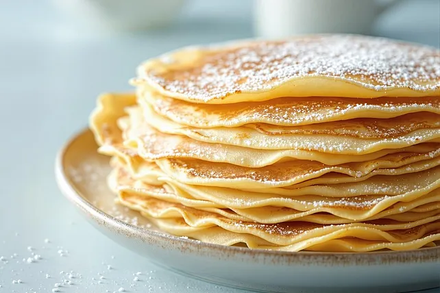

Pfannkuchen

Ingredients
- 400g Flour
- 750ml Milk (low fat)
- 3 Eggs (M)
- 1 Tablespoon Salt
- Some Mineral Water
- Some Butter (for the frying pan)
Steps
- Mix flour, milk, eggs, and salt until you have a smooth, slightly runny dough.
- Set aside and cool for half an hour.
- Add the mineral water and gently stir once or twice.
- Add butter to the heated frying pan.
- Add the dough and wait until the dough is crispy and golden on one side, then flip to the other side and bake
until golden brown on both sides.
- Enjoy with some fruit or chocolate cream or with cheese and ham for a savoury experience.